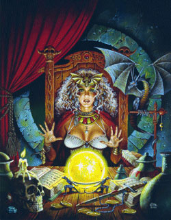
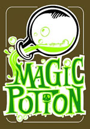
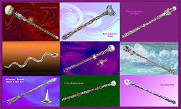
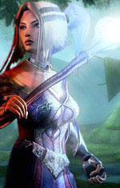

L'Accademia dei Nove Saggi produce e commercia oggetti magici, pozioni, componenti per incantesimi ed altri beni utilizzati dagli utenti di magia. Il commercio di tali prodotti rappresenta una delle principali attività economiche svolte dall'accademia dei nove saggi.

L'Accademia dei Nove Saggi vende
a chiunque disponga del permesso annuo per l'utilizzo delle pozioni magiche
rilasciato dall'Ispettorato del Magico del Regno di Tarsis una serie di pozioni
magiche. La gran parte delle pozioni in vendita sono importate da altre scuole
di magia.
Tutte le pozioni vendute dall'Accademia hanno una
probabilità di riuscita dell'80%,
se si vuole acquistare una pozione la cui efficacia sia stata controllata
magicamente e certificata occorre pagare un prezzo supplementare di 100
corone.
Quando prima del tempo di attesa c'è un numero tra parentesi, questo indica il numero di pozioni che mediamente si possono trovare già preparate senza dovere attendere il tempo di attesa (tale periodo dovrà essere atteso se si desidera acquistare altre pozioni supplementari dello stesso tipo).
| Tipo di Pozione | Tempo di Attesa | Costo in corone |
| Potion of Gaseous Form | (2) 1 mese | 700 |
| Potion of Longevity | 3 mesi | 1000 |
| Potion of Infravision | (1) 1 mese | 500 |
| Potion of Flying | (1) 1 mese | 750 |
| Potion of Levitation | (2) 1 mese | 450 |
| Potion of Water Breathing | (1) 1 mese | 900 |
| Potion of Speed | (1) 1 mese | 550 |
| Potion of Strenght | (1) 1 mese | 850 |
| Potion of Teleportation | 2 mesi | 1,900 |

L'Accademia dei Nove Saggi produce su richiesta i più comuni incantamenti minori dei maghi. In primo luogo, l'Accademia incanta, su richiesta, oggetti portati dai clienti. Il cliente dovrà procurarsi un oggetto e consegnarlo all'Accademia e pagare, tutto anticipatamente, un contributo di 5 corone + il valore dell'incantamento prescelto. L'Accademia garantisce la consegna dell'oggetto perfettamente incantato in un tempo pari al 300% del tempo minimo normalmente richiesto per la produzione dell'incantamento. Per gli incantamenti di scuola di magia diversa dall'alterazione ed evocazione si richiede però un prezzo supplementare del 5% sul valore dell'incantamento e la consegna avverrà in un tempo pari al 400% del tempo minimo normalmente richiesto per la produzione dell'incantamento.
L'Accademia però richiede che sia consegnata per le armi, quantomeno un'arma di qualità superba, per le corazze una corazza di fattura eccellente, per le gemme una gemma di qualità buona e 6 carati. L'Accademia per propria politica non incanterà, infatti, oggetti di qualità inferiore a quella su specificata. Ciò non toglie, però, che il cliente possa, assumendosi normalmente il rischio di fallimento, organizzarsi con un singolo mago accademico per l'incantamento del proprio oggetto.

L'Accademia dei Nove Saggi di Tarsis è famosa per la sua produzione di bacchette magiche di evocazione, tutte le bacchette magiche sono prodotte su ordinazione con pagamento anticipato. Tutte le bacchette appena create posseggono 1d20+80 cariche. Per verificare il funzionamento delle bacchette magiche consultare il relativo regolamento (LINK).
BACCHETTE CON SINGOLI INCANTESIMI
| Tipo di Bacchetta Magica | Tempo di Attesa | Costo in Corone / Valore in XP |
|
Wand of Force Bolt (1° lvl, 2° grado, Evocation Air) |
1d3+1 mesi | 3250 / 400 |
|
Wand of Bronze Ball (1° lvl, 4° grado, Evocation Mineral) |
1d3+3 mesi | 5250 / 650 |
|
Wand of Magic Missile (1° lvl, 4° grado, Evocation Air) |
1d3+3 mesi | 5500 / 650 |
| Wand
of Lesser Evocation of the Rock (2° lvl, 2° grado, Evocation Earth) |
1d3+3 mesi | 5200 / 650 |
|
Wand of Power Bolt (2° lvl, 2° grado, Evocation Lightning) |
1d3+4 mesi | 6500 / 800 |
|
Wand of Tarsis Rain of Stone (2° lvl, 3° grado, Evocation Earth) |
1d6+6 mesi | 11000 / 1000 |
|
Wand of Medium Evocation of the Rock (3° lvl, 2° grado, Evocation Earth) |
1d6+6 mesi | 12000 / 1500 |
|
Wand of Heavy Magic Missile (3° lvl, 4° grado, Evocation Air) |
1d10+8 mesi | 16000 / 2000 |
|
Wand of Lightning Bolt (3° lvl, 4° grado, Evocation Lightning) |
1d10+8 mesi | 17000 / 2000 |
BACCHETTE CON EFFETTI
MAGICI PLURIMI
Wand of Air Evocation
(Costo: 8800 corone, Valore in XP: 1100, Tempo di attesa 1d12+8 mesi)
1 carica) Force Bolt (1° lvl, 2° grado, Evocation
Air)
1 carica) Magic Missile (1° lvl, 4°
grado, Evocation Air)
1 carica) Shield (1° lvl, 3°
grado/1° grado, Evocation Air/Abjuration)
Wand of Earth Evocation
(Costo: 20100 corone, Valore in XP: 2325, Tempo di attesa 1d12+12 mesi)
1 carica) Lesser Evocation of the Rock (2° lvl, 2° grado, Evocation
Earth)
2 cariche) Medium Evocation of the
Rock (3° lvl, 2° grado, Evocation
Earth)
3 cariche) Tarsis Rain of Stone (2°
lvl, 3° grado, Evocation
Earth)
VENDITA DI BACCHETTE USATE
Esiste anche un mercato di bacchette magiche usate. Ogni mese vi è il 30% che una di tali bacchette sia in vendita presso l'Accademia dei Nove Saggi. Nella quasi totalità dei casi si tratta di bacchette magiche contenenti un singolo effetto magico. Per determinare l'effetto magico caricato sulla bacchetta tirare 1d12: 1-5 primo livello di potere 6-9 secondo livello di potere 10-12 terzo livello di potere. Una volta determinato il livello di potere determinare la magia selezionandola a sorte tra gli incantesimi di evocazione presenti nel libro accademico di quel livello di potere. Determinare quindi il numero di cariche massime (1d20+80) e di cariche ancora presenti effettuando un tiro percentuale. Il risultato del tiro percentuale corrisponderà alla percentuale di cariche residue sull'ammontare massimo arrotondate per eccesso. Quindi si tiri un 1d12 per verificare se e quanto la bacchetta è stata ricaricata: 1-6 la bacchetta non è mai stata ricaricata; per ogni risultato superiore al 6 la bacchetta è già stata ricaricata una volta; 12 si tiri ulteriormente 1d6: 1-3 la bacchetta sarà stata ricaricata 6 volte, 4-6 la bacchetta non può essere più ricaricata. L'Accademia venderà la bacchetta ad una percentuale del suo valore di mercato determinata tirando 1d6: 1 La bacchetta è venduta al 90% del suo valore di mercato; 2 La bacchetta è venduta al 95% del suo valore di mercato; 3 La bacchetta è venduta al 100% del suo valore di mercato; 4 La bacchetta è venduta al 105% del suo valore di mercato; 5 La bacchetta è venduta al 110% del suo valore di mercato; 6 La bacchetta è venduta al 115% del suo valore di mercato.
VENDITA DI VERGHE DELLA
STREGONERIA

L'Accademia
dei Nove Saggi produce anche verghe della stregoneria utilizzate dai suoi
membri.
Le verghe della stregoneria prodotte dall'Accademia dei Nove Saggi sono create
infondendo loro energia magica della scuola
Evocation,
Piano di riferimento
interno dell'Aria
e della
scuola Evocation,
Piano di riferimento
interno della Terra.
L'accademia produce verghe della
stregoneria inserendo incantamenti scelti dall'acquirente. Il costo della verga
deve essere anticipato interamente all'Accademia. Tutte le verghe appena create
posseggono 1d10+40 cariche. Per verificare il funzionamento delle verghe della
stregoneria consultare il relativo regolamento (LINK).
Per ordinare una verga della stregoneria e calcolarne il costo nonché il
relativo tempo di attesa si seguano i seguenti passi:
1)
Selezionare la forma, il materiale ed il relativo costo della verga (link)
decidendo principalmente tra:
a)
Verga corta
b)
Verga lunga
Si tenga presente che, in
ogni caso, l'Accademia non accetterà di lavorare
su verghe aventi valore negativo di possibilità di incantamento.
2)
Selezionare la scuola di magia base della verga tra:
a)
Evocation,
Piano di riferimento
interno dell'Aria
b)
Evocation,
Piano di riferimento
interno della Terra
3)
Aggiungere il costo dell'incantamento
magico minore obbligatorio (link):
*
Verga della Stregoneria
[Minor Enchantment (150 xp, 1000 gp)]
4)
Selezionare
l'eventuale
incantamento magico minore
concernente il risparmio di
energia magica (link):
*
Mantenimento Minore delle Cariche Magiche
[Lesser Minor Enchantment (100 xp, 500 gp)]
*
Mantenimento Maggiore delle Cariche Magiche
[Minor Enchantment (150 xp, 1000 gp)]
*
Verga del Risparmio di Energia Magica Minore
[Superior
Minor Enchantment (250 xp, 1500 gp)]
*
Verga del Risparmio di Energia Magica
[Greater
Minor Enchantment (375 xp, 3000 gp)]
*
Rod of Walking [Greater
Minor Enchantment (375 xp, 3000 gp)]
5) Selezionare gli
eventuali
poteri di incanalamento di
energia magica
da inserire nella verga della
stregoneria. Può essere selezionato un qualsiasi numero di poteri, aggiungere
interamente il valore in corone ed in xp del potere più costoso ed il 50% del
valore degli ulteriori poteri prescelti. I poteri di incanalamento di energia
magica sono i seguenti:
*
SOSTITUZIONE DI ENERGIA MAGICA
(+2.500 g.p., +300 xp)
*
ELEVAMENTO DEL LIVELLO DI
LANCIO (+2.500
g.p., +300 xp)
*
INCREMENTO DEL RAGGIO DI
AZIONE (+2.000
g.p., +250 xp)
*
INCREMENTO DELLA DURATA (+2.500
g.p., +300 xp)
*
POTENZIAMENTO DI ENERGIA MAGICA
(+2.000 g.p., +250 xp)
*
ABBASSAMENTO DELLE DIFESE
MAGICHE
(+2.000 g.p., +250 xp)
*
RIDUZIONE DELLA RESISTENZA
MAGICA (+1.500
g.p., +200 xp)
6)
Aggiungere eventualmente un incantamento proprio della verga della stregoneria.
Può essere seleziona un unico potere magico proprio della verga tra quelli
presenti nella seguente lista. Il costo in corone ed il valore in punti
esperienza del potere deve aggiungersi interamente per determinare il valore
finale dell'oggetto magico.
Globe of Light
(+2.000 g.p., +200 xp)
Utilizzando 1 carica della verga la parte superiore della stessa viene
circondata da un globo di luce bianca. La verga illuminerà di fredda luce bianca
un'area di 9 metri di raggio (si consideri come la luce di una lanterna o quella
prodotta dalla magia light). L'effetto dura fino a che il mago non decide
di spegnere la luminosità della verga o, comunque, fino a che non siano passate
24 ore dall'accensione della stessa. Per spegnere la luminosità il mago deve
utilizzare le stesse regole utilizzate per attivare il potere proprio della
verga con l'unica eccezione consistente nel non dover spendere alcuna carica per
lo spegnimento.
Utilizzando 2 cariche della verga l'intensità della luce sarà più forte e
la verga illuminerà un'area di 12 metri di raggio (si consideri come se fosse
luce del giorno oppure luce prodotta dalla magia
continual light).
Electric
Touch
(+3.000 g.p., +350 xp)
Utilizzando 1 carica della verga la parte superiore della stessa viene
circondata da visibili ed apparentemente pericolose scariche elettriche nei
6
round successivi all'attivazione. Qualora il mago tocchi con un attacco
effettuato con la verga una creatura durante tale periodo la stessa subirà
8 danni da elettricità
dimezzabili con un tiro salvezza contro verghe magiche. Se il mago attacca una
creatura di metallo, una creatura che indossa una corazza metallica, una
creatura che utilizza uno scudo metallico (della dimensione di uno scudo medio o
superiore), oppure una creatura che impugna un'arma di metallo di dimensioni
Large, costui otterrà un bonus di +2 al tiro per colpire. Qualora,
per qualsiasi motivo, il mago smette di impugnare la verga l'effetto svanirà
immediatamente. Se la punta della verga è immersa nell'acqua la scossa si
trasmetterà a 6 metri di distanza (in una sfera di 6 metri di raggio) facendo
subire i danni da elettricità a tutte le creature presenti. In tal caso, però,
l'effetto della verga terminerà immediatamente.
7) Calcolare il valore finale della verga in monete d'oro e punti esperienza sommando tutti i relativi addenti. Per calcolare il tempo di consegna (espresso in numero di giorni) della verga si utilizzi la seguente formula: [(1d12 *10 giorni)+(1 giorno ogni 50 monete d'oro di valore della verga)]. Si noti che l'intero prezzo della verga deve essere pagato al momento dell'ordinazione.